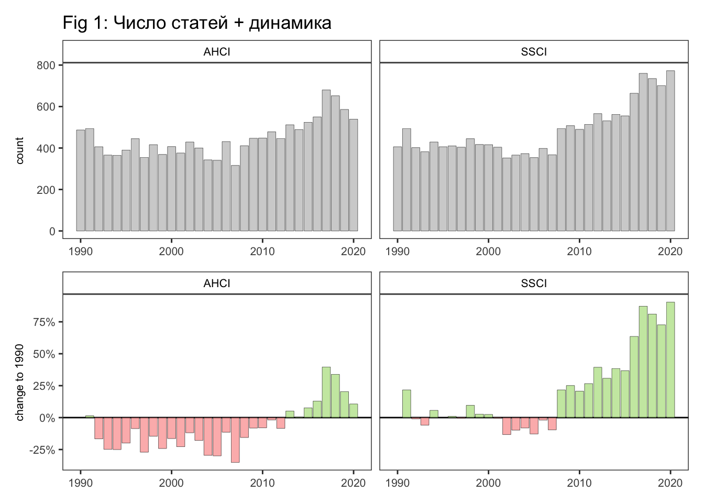

I. PRODUCTION OF PUBLICATIONS
В документе всё построено на full_data_precise_original. Произведена чистка стран, институций по доку ТЗ Катерины. Со странами проблем нет, Инстритуции всё еще не унифицированы полностью.
Произведено вменение институциям единственной страны (через присвоение моды). Произведено вменение стране единственного региона (через присвоение моды).
Если исследовательская область выглядит как список, например, Political Science; Area Studies, тогда публикация дублируется и считается как +1 публикация для каждой из областей в списке.
Если исследовательская область выглядит как список, [‘SSCI’, ‘AHCI’], тогда публикация дублируется и считается как +1 публикация для каждой из областей в списке.
Фракционализация для институтский проводилась только в разделе I, пункте (7) (показаны таблицы и с фракционализацией и без).
ОБНОВЛЕНИЕ I и II раздела
Есть файл full_data_precise_original на котором делались последние расчеты для аналитики. И есть новый файл data_website_revised - это файл для анализа институций с улучшенной припиской аффилиаций и с включением строк, где организация не идентифицирована (Unknown or Uni < 10) для точной фракционализации.
Для обновления I и II раздела, как я вижу, нужно сначала сделать следующее с файлами.
Мы опираемся на очищенный full_data_precise_original, но сейчас после дополнительной чистки немного поменялись значения в переменных organisation_full и country. Тогда я бы сделала так:
в full_data_precise_original заменила бы значения переменных organisation_full и country на значения переменных organisation_full и country из файла data_website_revised - СДЕЛАНО ✅
проверила бы значения region – так как могли быть идентифицированы новые строки и нужно посмотреть, чтобы им приписался регион. - СДЕЛАНО ✅
ЧТОБЫ НЕ ЗАБЫТЬ! в новом получившимся датасете имя конкретного автора не совадает с его институцией. То есть у нас есть статья с тремя соавторами.
Но общее кол-во строчек и институций / стран сохранияется. просто фамилии теперь перемешаны
1. Динамика и прирост
Fig 1 Использованы сущности, где статья записана одной строчкой, а не многими в случае многих авторов. Без фракционализации по SSCI или AHCI. Если исследовательская область выглядит как список, [‘SSCI’, ‘AHCI’], тогда публикация дублируется и считается как +1 публикация для каждой из областей в списке.
На Fig 1 видно, что публикации в [‘SSCI’] на протяжение 1990-2007 годов варьировались в диапазоне до ~400 публикаций в год. После 2008 года рубеж в 400 публикаций стабильно преодолен и количество публикаций в год нарастало вплоть до ~600 в 2020.

2. Динамика по областям
Все области
Fig 2 Использовать сущность, где статья записана одной строчкой, а не многими в случае многих авторов. Однако сделать фракционализацию на число областей. Если статья принадлежала 3 областям, то сделать 0,3 – по такому принципу. По SSCI или AHCI фракционализацию не делать.
Из Fig 2 хорошо видно структуру Рашн стадис. Видно, что по политологии, экономики, истории и литературе написан основной массив всех текстов за 1990-2020.
Fig 4a и Fig 4b – все отлично, только сделать фракционализацию по областям. Использовать сущность, где статья записана одной строчкой, а не многими в случае многих авторов. Однако сделать фракционализацию на число областей. Если статья принадлежала 3 областям, то сделать 0,3 – по такому принципу. Оставить динамичную ось.
На Fig 4a и Fig 4b видно, что История сильно приросла в процентах от всех областей. Так же доля социологии, лингвистики и философии приросли. Доли Арт и литературы снизились. Очень стабильную долю на за 1990-2020 держит только политология (в районе 20%). На самом деле еще экономика, кроме всплеска доли в конце 90-х (может интерес вызван исследованиям кризиса 1998)
Динамичная ось Y
3. Регионы
Fig 5a и Fig 5b Использовать сущность, где статья записана одной строчкой, а не многими в случае многих авторов. Если статья принадлежит нескольким регионам, то присвоить каждому региону статью. То есть не фракционализировать. То есть не должно быть ситуации, когда у статьи 5 авторов из России, и это 5 строчек в базе, это должна остаться 1 строчка.
Other это Africa, Americas, Oceania.
Основной массив текстов раньше писался в США. Но доля США стабильно падала, доля России и Европы и Азии растет. Доля США падает не потому что они стали писать меньше статей, они пишут столько же. Это просто Россия и Европа в штуках стали больше писать.
distinct(UT)
4. Специализация регионов
Fig 6 Использовать сущность, где статья записана одной строчкой, а не многими в случае многих авторов. Если статья принадлежит нескольким регионам, то присвоить каждому региону статью. То есть не фракционализировать. То есть не должно быть ситуации, когда у статьи 5 авторов из России, и это 5 строчек в базе, это должна остаться 1 строчка. Однако фракционализировать на число областей, то есть если статья России принадлежала 2 областям, то записать их по 0,5.
ПРИМЕР: У WOS:A1995QJ42600001 три соавтора их двух регионов. У статьи через ; две исследовательские области. Региону А в Oбласть I падает 0.5 и в Oбласть II падает 0.5. Региону В в Oбласть I падает 0.5 и в Oбласть II падает 0.5.
На Fig 6 в глаза бросается относительная большая специализация России на Философии, социологии, а так же относительно большая специализация США на литературе. У России в структуре относительно мало Истории, а у США экономики.
Fig 7 Использовать сущность, где статья записана одной строчкой, а не многими в случае многих авторов. Если статья принадлежит нескольким регионам, то присвоить каждому региону статью. То есть не фракционализировать. То есть не должно быть ситуации, когда у статьи 5 авторов из России, и это 5 строчек в базе, это должна остаться 1 строчка. Однако фракционализировать на число областей, то есть если статья России принадлежала 2 областям, то записать их по 0,5.
На Fig 7 видим, что скачек доли экономических статей это в основном российский регион. Видим странный скачек Арт публикаций в России в 2005-2006. Видим планомерный рост доли истории у США. Видим странный горб по философии в 2001-2007 в России. Ну и обвал доли публикаций по политологии в России начиная с 2013. Все остальные доли в России, США и Европе кажутся относительно стабильными.

5. Вклад региона в область
Fig 8a Использовать сущность, где статья записана одной строчкой, а не многими в случае многих авторов. Если статья принадлежит нескольким регионам, то присвоить каждому региону статью. То есть не фракционализировать. То есть не должно быть ситуации, когда у статьи 5 авторов из России, и это 5 строчек в базе, это должна остаться 1 строчка. Однако фракционализировать на число областей, то есть если статья России принадлежала 2 областям, то записать их по 0,5.
Россия из всех дисциплин серьезный вклад вносит в образование, философию, социологию и урбан (мало наблюдений) - авторы из России участвовали в написании от четверти и более всех публикаций в этих областях.
6. Страны и число организаций
Примечание: Из 33898 строк у ~8100 нет институции и у ~4200 нет страны
Table 1: Страны и число организаций
7. Вклад стран и организаций
Важно: если у статьи два автора из россии и один с германии. Мы прибавляем +1 статью для россии (НЕ +2!) и +1 германии.